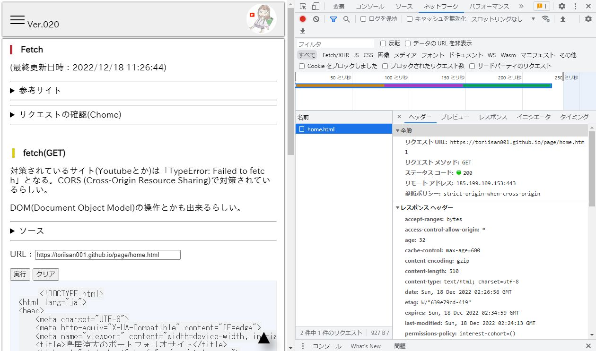

Fetch
リクエストの確認(Chome)
F12キー(開発用コンソール)を開く
ネットワークタブを選択
Fetch/XHRタブを選択
Fetchでリクエストを実行
タイムライン?から該当のリクエストを選択
名前から該当の名前を選択
fetch(GET)
対策されているサイト(Youtubeとか)は「TypeError: Failed to fetch」となる。CORS (Cross-Origin Resource Sharing)で対策されているらしい。
DOM(Document Object Model)の操作とかも出来るらしい。
ソース
const geturl = document.getElementById("geturl");
const getexec = document.getElementById("getexec");
const getclear = document.getElementById("getclear");
const getdom = document.getElementById("getdom");
// GETDOM取得
async function getFetch($geturl) {
try {
const result = await fetch($geturl, {
method: "GET",
})
.then(function (response) {
return response.text();
})
.then(function (data) {
getdom.textContent = data;
});
} catch (error) {
console.log(error);
getdom.textContent = error.toString();
}
}
getexec.addEventListener("click", () => {
getFetch(geturl.value);
});
getclear.addEventListener("click", () => {
getdom.textContent = "";
geturl.value = "";
});
URL：
fetch(POST)
何故か動かない。？？？
URL：